2023 → 2026 · 17 releases · 27 sketches
Music
Every release and every rough sketch on one timeline, newest first. Scroll down to travel back to where it started.
Composition, arrangement & plugin curation — daily tools: WavesFabFilterKontaktNI KompleteArturia Analog LabArturia V Collection
New Indie Film Music Contest — Winter 2025: two juried film scores with pro feedback44 tracks shown
Tracks
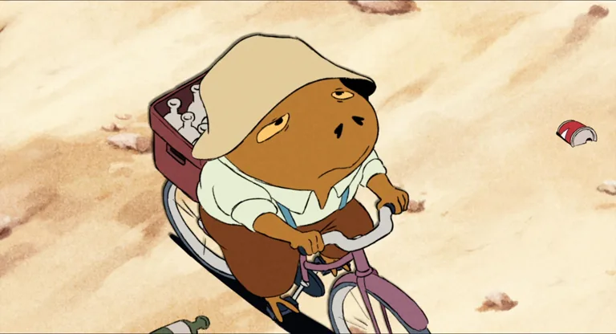
Walter - IFMC Winter 2025 Rescore
3:47Juried rescore for Lorenzo Fresta's dialogue-free animation, written for the Indie Film Music Contest Winter 2025 edition and published on February 5, 2026.
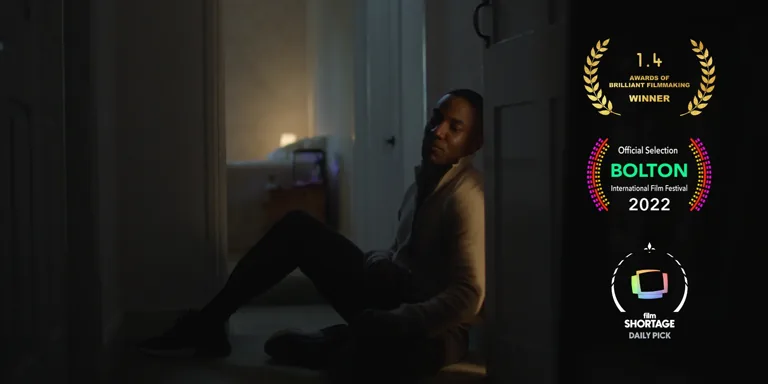
When The Clapping Stops - IFMC Winter 2025 Rescore
3:11Dark orchestral rescore for Cameron Perry's live-action short, submitted to IFMC Winter 2025 and published on February 5, 2026.
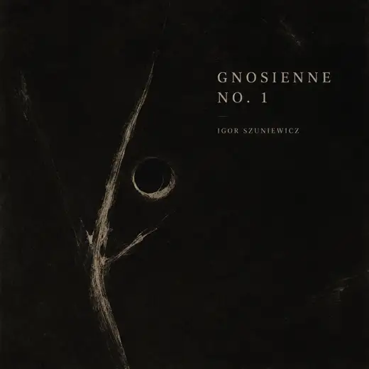
Gnossienne No. 1
3:03Metal cover of Erik Satie's Gnossienne No. 1, built around the original melody but pushed into a slower, heavier guitar arrangement.
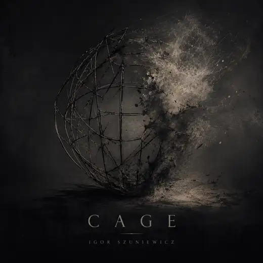
Cage
1:50Short metal track focused on a tight main riff, aggressive rhythm edits, and a compact arrangement that gets in and out fast.
That's It - Cover
1:57Cover of the Preservation Hall Jazz Band track, rearranged as a short jazz version with brighter voicings and a looser feel.

Cathedral Of Time
6:03Six-minute scene cue that moves from quiet tension into a denser final section, written more like a scene cue than a single.
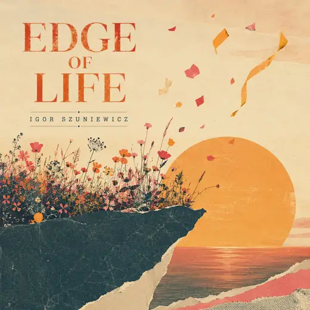
Edge Of Life
2:06Two-minute trailer-style cue shaped around a quick rise, release, and ending hit. Built for a trailer-style arc rather than a long-form track.
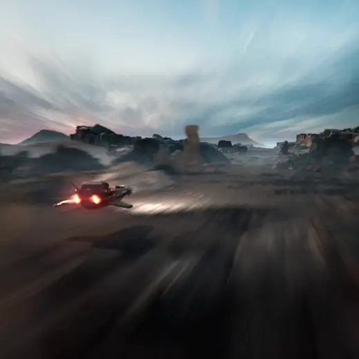
Richter - Main Theme
0:38Main theme for the student film "Richter". A 38-second cue that has to establish danger quickly and leave room for the film's sound design.
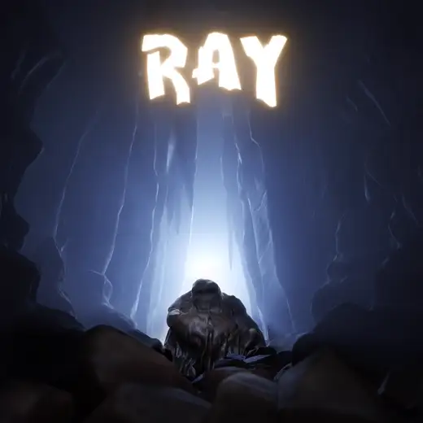
Ray - Credits Theme
0:22End credits cue for the animation "Ray". At 22 seconds, it works as a short closing gesture after the film's disco-funk score.
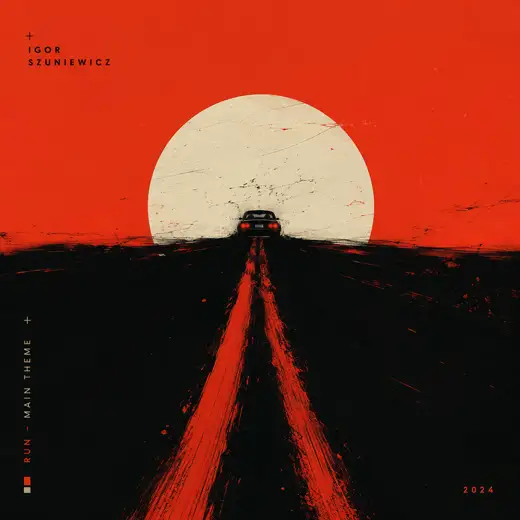
Run - Main Theme
2:00Two-minute chase cue built for forward motion, quick cuts, and rising pressure. The structure stays direct so the scene keeps moving.
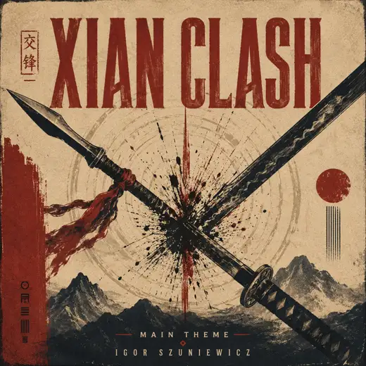
Xian Clash - Main Theme
1:56Combat cue for a martial arts scene, written around choreography timing and clear rhythmic accents for hits and movement.
Syncopation$
2:04Electronic track built around rhythmic displacement and a steady club pulse. The groove leans slightly off-center before settling in.
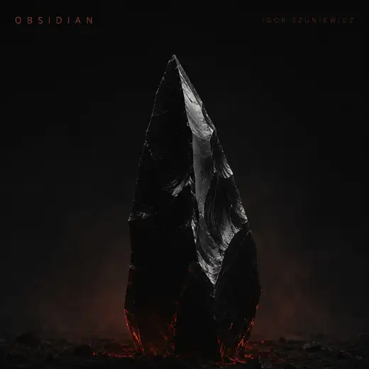
Obsidian
1:44Dark electronic track with a minimal structure and a heavier low-end focus. More about pressure and texture than a big melodic hook.
Ça Plane Pour Moi - Techno Remix
2:46Techno remix of the Belgian punk classic, keeping the track's frantic attitude while rebuilding it around a club-style rhythm section.

Astrophonic Dance
3:25Electronic single with a bright, dance-focused feel and a clear throwback influence from older trance and club tracks.
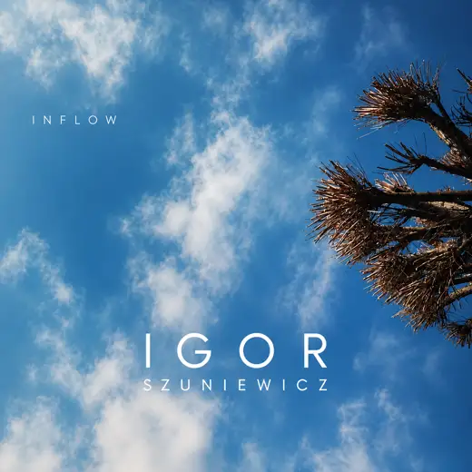
Inflow
3:05Downtempo electronic track built around small details, soft movement, and a calmer pace than the club-oriented pieces.
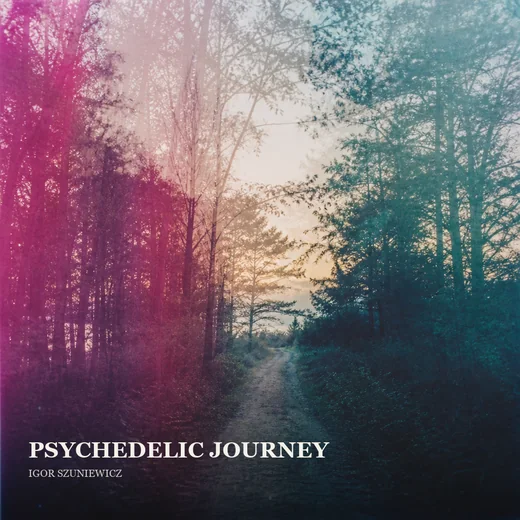
Psychedelic Journey
2:22Psychedelic electronic track with a faster pulse and filter-driven motion, written as a short high-energy experiment.